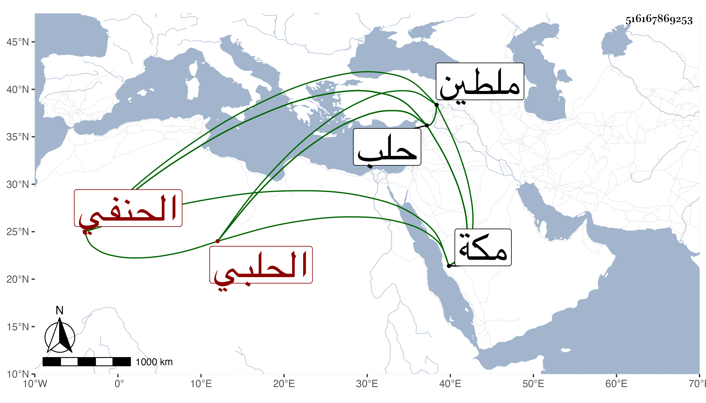

0902Sakhawi.DawLamic.ITO20230111-ara1.EIS1600.516167869253
Biography ID: 516167869253
737
علي بن خليل بن محمد بن حسن الحلبي الحنفي . لقيني في ذي الحجة سنة سبع وتسعين بمكة قرأ على البعض من الصحيحين وسمع مني المسلسل وغيره وكتبت له وقال أن مولده تقريبا سنة خمس وستين وثمانمائة بحلب وأنه جود القرآن على أبيه واشتغل في النحو على نصر الله العجمي نزيل حلب والمتوفى بها سنة اثنتين وتسعين وفي الفقه على أبيه المتوفي في المحرم سنة ثلاث وتسعين والمنطق والحكمة والكلام على الشمس محمد بن فخر الدين بن خير الدين الحلبي المتوفي سنة تسع وثمانين والحساب والهيئة والنجوم علي يوسف بن قرقماس الحمزاوي الحلبي أحد الأحباء كل ذلك بحلب وبملطية المعاني والبيان على أحد علمائها التاج إبراهيم المتو في سنة ست وتسعين ، وتميز وشارك في الفضائل وحج قبل ذلك ثم الآن وصله الله سالما .
